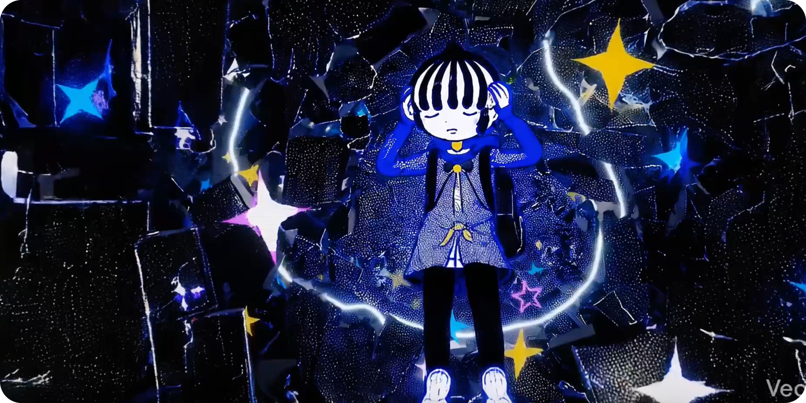
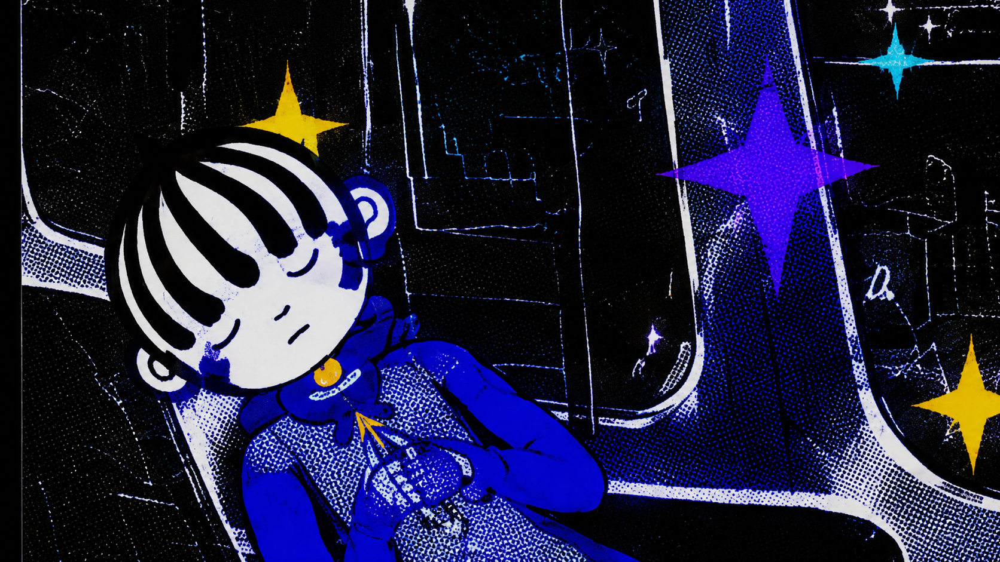

LAST STOP
AIGC短片

PROJECT INTRODUCTION
《LAST STOP》是一部以 AI 生成技术完成的实验性短片。作品通过一个少年深夜乘坐地铁的旅程，表现现实与梦境之间逐渐模糊的边界。随着列车前进，熟悉的城市空间开始发生变化：站点不断重复、灯光产生扭曲，窗外的城市逐渐消失在类似宇宙的黑暗之中。
项目试图通过这种不断失去稳定性的空间体验，表现当代城市生活中的孤独感、精神疲惫与迷失状态。视觉制作结合 text-to-image、image-to-video 等 AI 生成工作流，再通过数字剪辑加入镜头运动、glitch 与实验性转场，最终形成具有半色调、VHS 噪点、蓝紫黄色霓虹色调与手绘线条感的梦境式视觉语言。
STORYBOARD

短片以约一分钟的夜间地铁旅程为主要叙事线索，从黑暗与星空进入现实中的地铁空间，随后逐渐进入重复、失真与超现实状态，最终以开放性的白色光源结束。
FINAL FRAMES
最终画面通过重复、失真、霓虹色与超现实空间变化，将地铁从现实中的通勤场景逐渐转化为梦境空间。AI 在这里不仅作为生成工具，也作为构建不稳定、模糊和非现实视觉体验的创作媒介。
